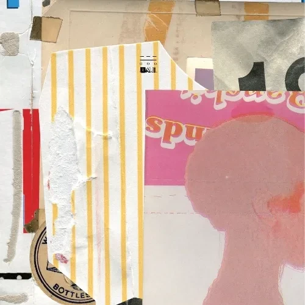

안녕하세요 라보엠입니다.
2024년도 벌써 2일차입니다. 새해도 잘 시작하고 있으시죠? 계획한 모든 일이 잘 풀리시길 바랍니다.
오늘은 2017년 발매된 나얼의 2번째 정규앨범 발매전 싱글로 먼저 발표한 리드 싱글인 기억의 빈자리를 소개해드리겠습니다.
나얼 기억의 빈자리
뮤직비디오의 주인공은 카라타 에리카로 LG 스마트폰 광고에도 출연했던 일본의 배우입니다. 아스달 연대기에 출연했던 그녀는 2023년 아라문의 검에 같은 역할로 특별 출연해 잠시 얼굴을 비췄으며, 2024년에는 일본뿐만 아니라 한국에서도 활동을 재개할거라고 합니다. 뮤직비디오에서는 맑고 청순한 얼굴과 표정으로 추억속의 그녀로 남아 있습니다. 저도 한동안 무척 좋아했었는데 스캔들이 터져서 아쉬웠었던 기억이 있습니다.
나얼의 목소리와 더불어 카라타 에리카가 만들어낸 추억의 이미지는 이 노래를 더 추억속으로 인도하는 시너지 효과를 내며, 이 노래가 더 아련하게 느껴지게 만들었습니다.
기억의 빈자리 Release Note
[SOUND DOCTRINE]의 리드 싱글
공간을 비워낸 기억의 빈자리
2012년 바람기억과 2015년 같은 시간 속의 너는 광풍이었다. 그리고 가장 눈길을 끌었던 부분은 독보적인 차트 장기체류를 만들어 내었다는 점이다. 수많은 대중이 나얼의 노래를 통해 감동받고 싶어 했고, 듣고 또 듣고 나서도 다시 플레이리스트에 나얼의 곡을 올렸다. 빠르고 가벼운 가요계의 현실을 비웃듯 묵직한 감동을 선사하며 나얼의 노래들은 그렇게 그 해 최고의 히트곡들로 자리했다.
2017년 광풍이 다시 몰아칠 예정이다. 나얼의 두 번째 솔로 정규 앨범 [SOUND DOCTRINE]이 발매를 앞두고 있기 때문이다. 앨범 제목이 주는 강렬함만큼 압도적인 앨범이 되리라 쉽게 예상할 수 있다. 그에게만 주어진 노래 실력, 그리고 세세한 부분까지 직접 체크하는 신중함은 대중에게 외면받기가 오히려 쉽지 않다.
새 솔로 앨범에 대한 수많은 팬들의 기대와 궁금증은 앨범 발매에 앞서 싱글 커트된 기억의 빈자리를 통해 어느 정도 해소되리라 보인다. 단지 한 곡에 불과하지만 리드 싱글이 가진 상징성을 생각하면 나얼이 새 앨범 작업에 어떤 태도로 임했는지 조금이나마 짐작할 수 있기 때문이다. 늘 그래왔듯 이번 싱글 역시 작곡, 작사뿐만 아니라 아트웍까지 본인이 만들어내었다.
기억의 빈자리는 이전 히트곡인 바람기억과 같은 시간 속의 너를 연상시키는 감성 발라드 곡이지만 이전 곡들에 비해 사운드의 시간을 더 뒤로 돌렸다는 점이 두드러진다. 의도적으로 신디사이저의 베이직 사운드들을 활용하면서 1980년대 신스 팝발라드의 따뜻한 감성을 만들어 냈다.
곡의 가장 큰 특징은 사운드를 비워냈다는 점이다. 가창이 담긴 오리지널 버전과 피아노 버전 모두 악기 편성을 최소화했다. 두텁게 사운드를 쌓아 올려 소리의 공간을 채우는 현재의 트렌드와는 분명 다른 길이다. 웃기도록 놀라운 점은 저 심심한 사운드 위에 얹은 나얼의 목소리가 더 강렬하게 공간을 뚫고 나온다는 것. 밀도가 낮은 소리의 공간을 오르내리며 나얼의 목소리는 여전히 강렬한 감동을 선사한다. 담백하고 차분하게 이야기를 풀어내고 점점 고조되는 격정을 해소한 뒤 역시 차분하게 마무리된다. 첫 싱글이 대중의 기대에서 빗겨나지 않았다는 점에서 팬들은 감동과 안도감을 동시에 선물 받을 것이다.
브라운 아이드 소울 때도, 솔로 1집 때도 그러했듯 이번에도 나얼은 특별한 매체에 곡을 담았다. 8cm 싱글 CD를 선택하고 오리지널 버전, 피아노 버전, 연주곡 버전 세 곡을 담아 한정 발매한다. 디지털 싱글이 주요 매체가 되어버리면서 사라진 싱글의 의미를 다시 생각하게 만드는 대목이다. 싱글 음반을 구매하는 이들에게 어필할 수 있는 싱글용 편곡 버전이 함께 담기고, 연주곡까지 함께 담겨 있는 모습이 반갑다. 나얼은 이렇게 설명한다. ‘디지털 싱글이라는 인식이 강해서 싱글 음반이 가진 개념이 많이 혼란스러워졌어요. 싱글은 소비하고 사라지는 일회용 음악이 아닌 오히려 곡에 대한 다양한 것들을 보여주기 위한 시도였거든요. 한 곡 한 곡 깊게 더 고민하고 다양한 사운드를 들려주는 것이 싱글의 목적이었어요. 디지털 시대 이전부터 많은 뮤지션들이 음악을 발매했던 그런 방식...’
나얼은 어쩌면 과거에 집착한다. 매체의 변화를 좇지 않으며, 현재의 사운드에 기대지 않는다. 그럼에도 불구하고 트렌드를 집어 삼키는 반전의 결과... 과거의 매체, 과거의 사운드 안에서 우리는 더 많은 것들을 느끼고 감동할 수 있었다는 점을 수년에 한 번씩 나얼을 통해 되새기게 된다. (글/대중음악 평론가 이용지)
[CREDIT]
1. 기억의 빈자리
Composed by 나얼
Lyrics by 나얼
Arranged by 강화성
Background Vocal by 나얼
Programming by 강화성
Rhythm Programming by 신정은
Keyboards by 강화성 / 신정은
Guitar by 홍준호
Moog Bass by 최훈
2. 기억의 빈자리 (Piano Version)
Composed by 나얼
Lyrics by 나얼
Arranged by 강화성
Piano by 강화성
3. 기억의 빈자리 (Instrumental)
Composed by 나얼
Arranged by 강화성
Programming by 강화성
Rhythm Programming by 신정은
Keyboards by 강화성 / 신정은
Guitar by 홍준호
Moog Bass by 최훈
기억의 빈자리 가사
1.
니가 없는 자리는 투명한 꿈처럼
허전한 듯 나를 감싸고
무뎌진 마음을
꼭 붙잡았던 나는 오늘도 이렇게
그대라는 시간은 내 그림자처럼
항상 그 자리에
낮은 구름같이 무거운
하루를 보낸다고
chor.
차가운 바람이 이 자릴 지나면
우리는 사라지나요
달아나는 기억의 빈자리를
그대는 인정할 수 있나요
2.
아직 내 마음엔 서로 마주하던 그 눈빛을
이어주는 길이 남아있죠
돌아선 나날들이 서러운 걸요
chor.
차가운 바람이 이 자릴 지나면
우리는 사라지나요
마주치는 기억의 그 자리를 그대는
포기할 수 있나요
(br.)
뜨거운 눈물이 이 자릴 지우면
영원히 사라지나요
무딘 마음이 이 자릴 메우면
하루는 살아지나요
달아나는 기억의 빈자리를 그대는
바라볼 수 있나요
미련 가득히 이 자릴 채우면
그대는 돌아오나요
멀어지는 기억의 그 자리를
나는 이젠
